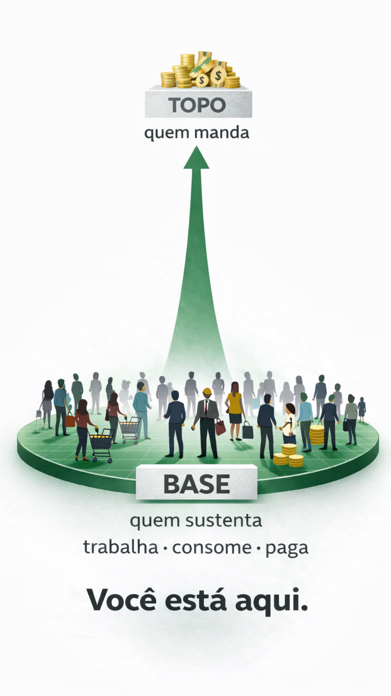

Você está na base.
Sem o terceiro nível, nada se sustenta.
Antes de discutir qualquer tema, é preciso entender a estrutura.
02Se a base sustenta, o fluxo revela prioridades.
03O orçamento não se define sozinho.
04A engrenagem também se protege pela complexidade.
05Compreender a estrutura muda a posição.
06Estruturas mudam quando a maioria que sustenta influencia quem decide.